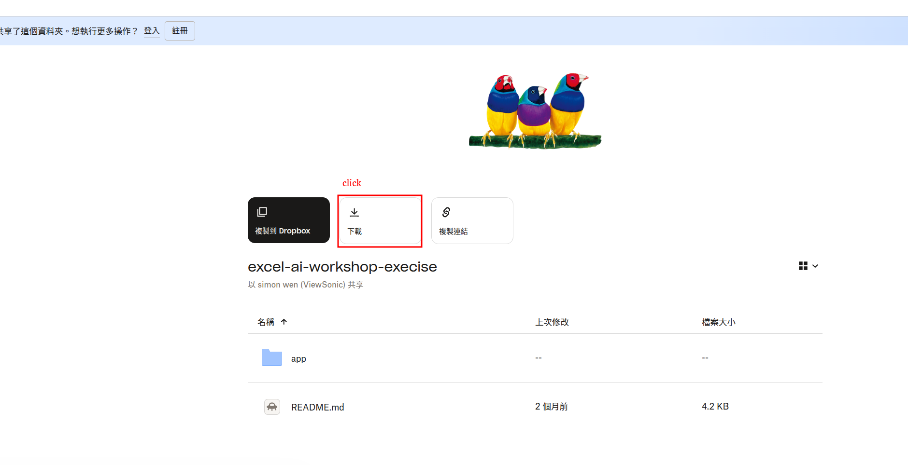
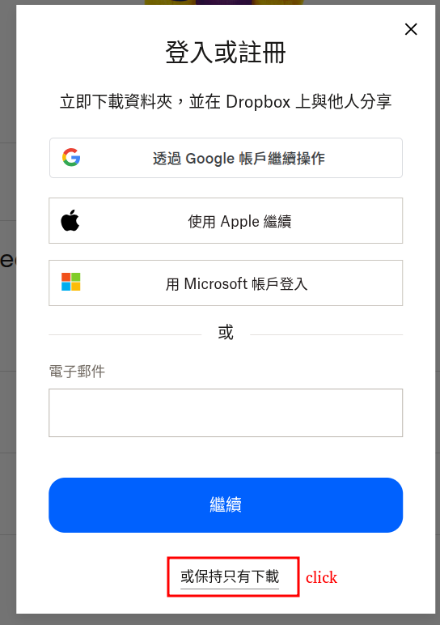
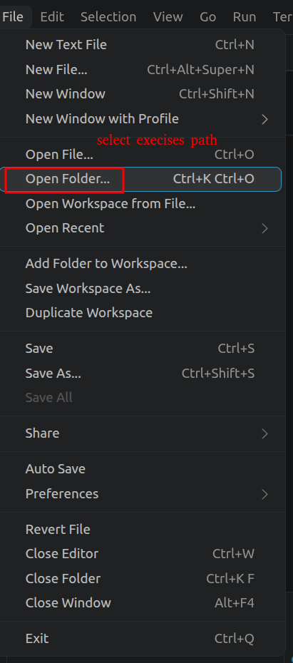
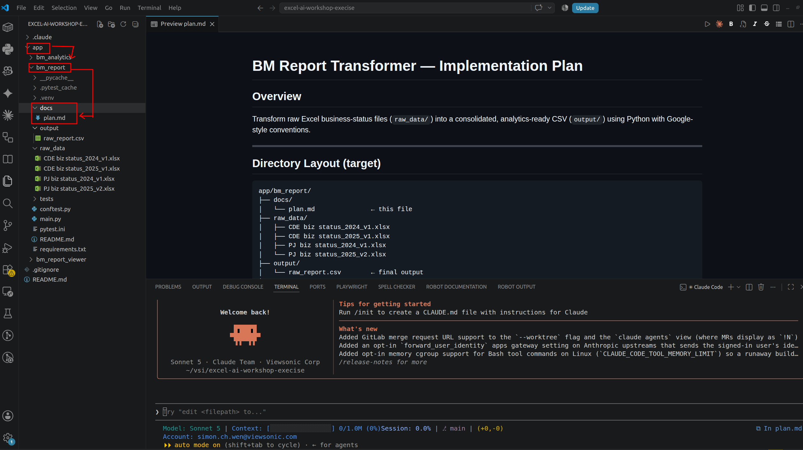

連到 Dropbox，下載並解壓縮
連結會導向 Dropbox 分享的資料夾頁面，點右上角的「下載」即可，無需登入。


下載完成後會是一個 .zip 檔，記得先解壓縮再進行下一步：
在檔案總管中找到下載的 .zip 檔，按滑鼠右鍵 → 全部解壓縮，選好位置後點「解壓縮」。
在 Finder 的下載項目中，直接雙擊 .zip 檔，會自動在同一位置解壓成資料夾。
用 VS Code 開啟資料夾，先看作業的 Plan
開啟 VS Code 後，從選單 File → Open Folder，選擇剛剛下載並解壓縮的作業資料夾。

資料夾開啟後，先展開 app 目錄，找到 app/bm_report/docs/plan.md 並預覽（Preview），看看這次作業預計實作的內容。

💬 Q：這份 Plan 如何產生？
A：本次作業已將和 AI 對話的過程歸納成 app/bm_report/docs/plan.md。
實際上，會需要和 AI 說明以下主要規範，當作日後產生 plan 文件的參考：
Designed, implemented, and refactored a Python BM Report Transformer that reads
4 Excel business-status files (raw_data/) and consolidates them into a single
analytics CSV (output/raw_report.csv). The pipeline was then refactored from
imperative to functional style using map, filter, functools.reduce, and
itertools.accumulate.
- venv + Google Python style — all source follows 4-space indent, ≤80 chars, Google docstrings, type hints,
logging(no bareprintin libs). - Amount scale = ×10,000 with
round()— Excel values are in $K-derived units;round(val * 10_000)produces integers matching the pre-existing output exactly. itertools.accumulatefor stateful row scan — chosen over mutable loop variable to track currentrev_op_typeacross rows in a functional style.- Execution timing via
config.timed()— stdlibtime.perf_counter()context manager logs per-stage wall-clock time;main.pyprints a summary line to stdout regardless of log level. - Plan written to
docs/plan.mdfirst — design doc committed before implementation, then appended with execution-time section. - "add rigorous unit test for app/bm_report"
設計、實作並重構了一個 Python 的 BM Report Transformer：讀取 4 份 Excel
營運狀態檔案（raw_data/），整合成單一份分析用的 CSV
（output/raw_report.csv）。之後再把整個流程從「命令式」寫法，
重構成使用 map、filter、functools.reduce、
itertools.accumulate 的「函數式」寫法。
- 虛擬環境（venv）＋ Google Python 風格 — 所有程式碼統一採用 4 個空格縮排、每行不超過 80 字元、Google 格式的 docstring、型別提示（type hints），並使用
logging（函式庫內不使用裸的print）。 - 金額換算 ×10,000，並用
round()取整數 — Excel 中的數值是以「千元」為基礎的換算單位；用round(val * 10_000)計算後，會得到與原本輸出完全一致的整數結果。 - 用
itertools.accumulate處理需要記錄狀態的逐列掃描 — 選擇用它取代「可變的迴圈變數」，以函數式寫法追蹤每一列資料目前的rev_op_type（營收/營運類型）。 - 用
config.timed()記錄執行時間 — 透過標準函式庫time.perf_counter()做成的 context manager，記錄每個階段花費的實際時間；main.py不論目前的 log 等級為何，都會印出一行執行時間摘要。 - 先寫好
docs/plan.md再開始實作 — 先把設計文件（plan.md）寫好並提交，之後才開始寫程式，實作完成後再把「執行時間」相關內容補進這份文件。 - 「為 app/bm_report 加上嚴謹的單元測試」
進入 AI Agent，依照 Plan 實作並驗證
進入你的 AI coding agent（例如 Claude Code），輸入以下 prompt 範例：
也可以參考根目錄的 README.md，了解如何執行主程式和跑單元測試。若想自己在終端機手動跑一次，可以先在 VS Code 選單點 Terminal → New Terminal 開啟終端機，再依作業系統輸入對應指令（實際指令仍以 README.md 為主，以下僅供參考）：
cd app\bm_report
python -m venv .venv
.venv\Scripts\activate
pip install -r requirements.txt
python main.py
pytestcd app/bm_report
python3 -m venv .venv
source .venv/bin/activate
pip install -r requirements.txt
python main.py
pytest.venv（例如已被 AI agent 建立過），可以略過建立虛擬環境那一行，直接執行啟用（activate）指令即可。
plan.md 的規劃讀取 raw_data、產出 output/ 底下的結果，並自行執行測試驗證。